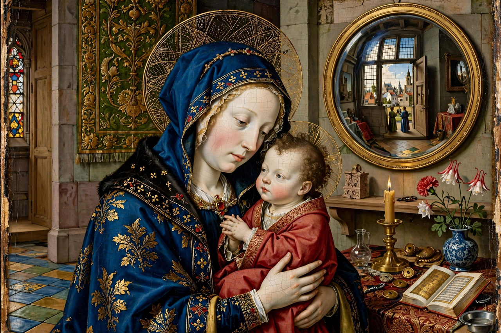

| Early Netherlandish painting | |
|---|---|
 | |
| Period | c. 1420s – 1520s |
| Region | Burgundian Netherlands (Flanders, Brabant) |
| Leading artists | Jan van Eyck, Robert Campin, Rogier van der Weyden |
| Medium | Oil on oak panel |
Early Netherlandish painting is the body of work produced by artists active in the Burgundian Netherlands during the 15th and early 16th centuries, roughly the 1420s to the 1520s. The period, sometimes called the Flemish Primitives, saw a revolution in panel painting centred on cities such as Bruges, Ghent, Tournai and Brussels, and financed by the Burgundian court, wealthy merchants and bankers.
Working in oil paint with unprecedented mastery — building up translucent glazes over precise underdrawings — these painters achieved an almost microscopic naturalism: reflections in convex mirrors, individual threads, fur, glass and jewels rendered with photographic fidelity. Compositions are often dense with disguised symbolism, ordinary objects carrying theological meaning, as in the Arnolfini Portrait (1434) by Jan van Eyck.
The founding generation comprises the Master of Flémalle (usually identified as Robert Campin), Jan van Eyck — painter of the Ghent Altarpiece (completed 1432, with his brother Hubert) — and Rogier van der Weyden, whose Descent from the Cross (c. 1435) set a standard for emotional intensity. The second generation includes Petrus Christus, Dieric Bouts, Hugo van der Goes, Hans Memling and Gerard David; the tradition culminates in the visionary art of Hieronymus Bosch and, in the early 16th century, the landscapes of Joachim Patinir.
Netherlandish panels were exported across Europe and transformed painting in Italy, Spain, France and Germany; van Eyck's reputation rivalled that of any Italian Renaissance master, and the meticulous oil technique pioneered in the North became the foundation of European easel painting for centuries.